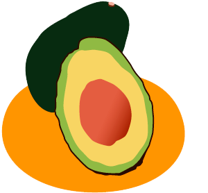

2017年12月号
「ワニナシ」と呼ばれていた果物な～んだ？

「ワニナシ」は「ワニ」と「梨」⇒「ワニの肌を感じさせるような梨」ということで、正解は「アボカド」です！
アボカドは、クスノキ科「ワニナシ属（alligator pear）」であることから、そのまま直訳した日本では「ワニナシ」と呼んでいたようです。
そう思ってみると、皮の部分がワニの肌を感じさせるかも知れません。
アボカドは、「森のバター」と称されるように、果物にも関わらず、脂質が100g中に約20ｇも含まれ（魚のブリよりも多く含む）、その脂質の約80％は、リノール酸やオレイン酸といった「不飽和脂肪酸」であるため、悪玉コレステロールを減らし、動脈硬化の予防や老化の防止に期待できます。
また、ビタミンAやビタミンEも豊富に含んでいることから、高血圧予防や発がん性の抑制作用も見逃せないところです。
それに何といっても「アボカド」は、「生食の果物で栄養価No.1」と「ギネスブック」に認定されている逸品なのです！！
しかし残念ながら、寒さに弱く熱帯から亜熱帯で育つ樹木であるため、国産品の流通は少ないのですが、今の季節（11月～1月）は「国産アボカド」の旬となりますので、スーパーでのお買い物の際は、是非チェックしてみてください！！
※「キウイフルーツ、バナナ、アボカド」などは、アレルギー「ラテックス（天然ゴム）アレルギー」を発症することがあるため、アレルギーのある人はご注意ください。